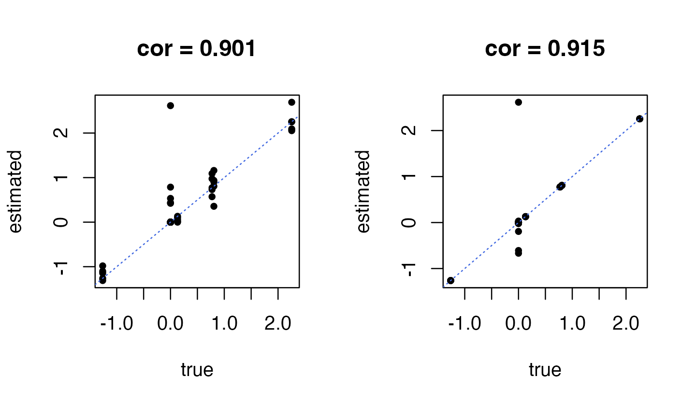
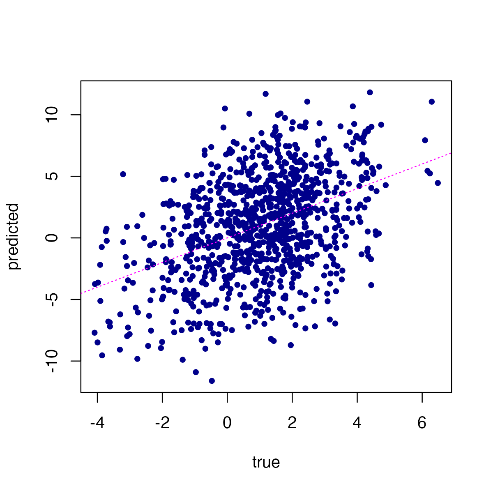

vignettes/mr_mash_intro.Rmd
mr_mash_intro.RmdThe aim of this vignette is to introduce the basic steps of a mr.mash analysis through a toy example. To learn more about mr.mash, please see the paper.
First, we set the seed to make the results more easily reproducible, and we load the “mr.mash.alpha” package.
library(mr.mash.alpha)
set.seed(123)We illustrate the application of mr.mash to a data set simulated from a multivariate, multiple linear regression with 5 responses in which the coefficients are the same for all responses. In the target application considered in the paper—prediction of multi-tissue gene expression from genotypes—this would correspond to the situation in which we would like to predict expression of a single gene in 5 different tissues from genotype data at multiple SNPs, and the SNPs have the same effects on gene expression in all 5 tissues. (In multi-tissue gene expression we would normally like to predict expression of many genes, but to simplify this vignette here we illustrate the key ideas with a single gene.)
Although this simulation is not a particularly realistic, this is meant to illustrate the benefits of mr.mash: by modeling the sharing of effects across tissues, mr.mash is able to more accurately estimate the effects in multiple tissues, and therefore is able to obtain better predictions.
We start by simulating 150 samples from a multivariate, multiple linear regression model in which 5 out of the 800 variables (SNPs) affect the 5 responses (expression levels).
dat <- simulate_mr_mash_data(n = 150,p = 800,p_causal = 5,r = 5,pve = 0.5,
V_cor = 0.25)Next we split the samples into a training set (with 100 samples) and test set (with 50 samples).
ntest <- 50
Ytrain <- dat$Y[-(1:ntest),]
Xtrain <- dat$X[-(1:ntest),]
Ytest <- dat$Y[1:ntest,]
Xtest <- dat$X[1:ntest,]To run mr.mash, we need to first specify the covariances in the mixture of normals prior. The idea is that the chosen collection of covariance matrices should include a variety of potential effect sharing patterns, and in the model fitting stage the prior should then assign most weight to the sharing patterns that are present in the data, and little or no weight on patterns that are inconsistent with the data. In general, we recommend learning “data-driven” covariance matrices. But here, for simplicity, we instead use “canonical” covariances which are not adaptive, but nonetheless well suited for this toy example since the true effects are the same across responses/tissues.
S0 <- compute_canonical_covs(r = 5,singletons = TRUE,
hetgrid = seq(0,1,0.25))This gives a mixture of 10 covariance matrices capturing a variety of “canonical” effect-sharing patterns:
names(S0)
# [1] "singleton1" "singleton2" "singleton3" "singleton4" "singleton5"
# [6] "independent" "shared0.25" "shared0.5" "shared0.75" "shared1"To illustrate the benefits of modeling a variety of effect-sharing patterns, we also try out mr.mash with a simpler mixture of covariance matrices in which the effects are effectively independent across tissues. Although this may seem to be a very poor choice of prior, particularly for this example, it turns out that several multivariate regression methods assume, implicitly or explicitly, this prior.
S0_ind <- compute_canonical_covs(r = 5,singletons = FALSE,
hetgrid = c(0,0.001,0.01))
names(S0_ind)
# [1] "independent" "shared0.001" "shared0.01"Regardless of the covariance matrices are chosen, it is recommended to also consider a variety of effect scales in the prior. This is normally achieved in mr.mash by expanding the mixture across a specifed grid of scaling factors. Here we choose this grid in an adaptive fashion based on the data:
univ_sumstats <- compute_univariate_sumstats(Xtrain,Ytrain,standardize = TRUE)
scaling_grid <- autoselect.mixsd(univ_sumstats,mult = sqrt(2))^2
S0 <- expand_covs(S0,scaling_grid)
S0_ind <- expand_covs(S0_ind,scaling_grid)Having specified the mr.mash prior, we are now ready to fit a mr.mash model to the training data (this may take a few minutes to run):
fit <- mr.mash(Xtrain,Ytrain,S0,update_V = TRUE)And for comparison we fit a second mr.mash model using the simpler and less flexible prior:
fit_ind <- mr.mash(Xtrain,Ytrain,S0_ind,update_V = TRUE)(Notice that the less complex model also takes less time to fit.)
For prediction, the key output is the posterior mean estimtes of the regression coefficients, stored in the “mu1” output. Let’s compare the estimates to the ground truth:
par(mfrow = c(1,2))
plot(dat$B,fit_ind$mu1,pch = 20,xlab = "true",ylab = "estimated",
main = sprintf("cor = %0.3f",
cor(as.vector(dat$B),as.vector(fit_ind$mu1))))
abline(a = 0,b = 1,col = "royalblue",lty = "dotted")
plot(dat$B,fit$mu1,pch = 20,xlab = "true",ylab = "estimated",
main = sprintf("cor = %0.3f",
cor(as.vector(dat$B),as.vector(fit$mu1))))
abline(a = 0,b = 1,col = "royalblue",lty = "dotted")
As expected, the coefficients on the left-hand side obtained using an “independent effects” prior are not as accurate as the the coefficients estimated using the more flexible prior (right-hand side).
While perhaps not of primary interest, for diagnostic purposes it is often helpfl to examine the estimated mixture weights in the prior as well as the estimated residual covariance matrix.
Inspecting the top prior mixture weights from the better model, it is helpful to see that the “null” and “shared1” components are among the top components by weight. (The top component is the null component because most of the SNPs have no effect on gene expression.)
head(sort(fit$w0,decreasing = TRUE),n = 10)
# null singleton2_grid1 singleton1_grid1 singleton5_grid1
# 0.04741471 0.04243749 0.04202594 0.04141742
# singleton4_grid1 singleton3_grid1 singleton2_grid2 shared1_grid1
# 0.04038929 0.04022118 0.03798986 0.03788223
# singleton1_grid2 singleton5_grid2
# 0.03724834 0.03618774Also, reassuringly, the estimated residual variance-covariance matrix is close to the matrix used to simulate the data:
dat$V
# [,1] [,2] [,3] [,4] [,5]
# [1,] 3.5145375 0.8786344 0.8786344 0.8786344 0.8786344
# [2,] 0.8786344 3.5145373 0.8786343 0.8786343 0.8786343
# [3,] 0.8786344 0.8786343 3.5145373 0.8786343 0.8786343
# [4,] 0.8786344 0.8786343 0.8786343 3.5145373 0.8786343
# [5,] 0.8786344 0.8786343 0.8786343 0.8786343 3.5145373
fit$V
# [,1] [,2] [,3] [,4] [,5]
# [1,] 3.2407233 0.8502217 0.8841572 1.3563118 1.0189386
# [2,] 0.8502217 3.5174997 1.2133736 0.6212035 0.1021557
# [3,] 0.8841572 1.2133736 2.5068761 0.6631672 1.0174394
# [4,] 1.3563118 0.6212035 0.6631672 2.7869990 0.7854292
# [5,] 1.0189386 0.1021557 1.0174394 0.7854292 2.9687632We can use the fitted mr.mash model to predict gene expression from a genotype sample, including a sample not included in the training set. This is implemented by the “predict” method. Let’s compare the predictions from the two mr.mash models:
par(mfrow = c(1,2))
Ypred <- predict(fit,Xtest)
Ypred_ind <- predict(fit_ind,Xtest)
plot(Ytest,Ypred_ind,pch = 20,col = "darkblue",xlab = "true",
ylab = "predicted",
main = sprintf("cor = %0.3f",cor(as.vector(Ytest),as.vector(Ypred_ind))))
abline(a = 0,b = 1,col = "magenta",lty = "dotted")
plot(Ytest,Ypred,pch = 20,col = "darkblue",xlab = "true",
ylab = "predicted",
main = sprintf("cor = %0.3f",cor(as.vector(Ytest),as.vector(Ypred))))
abline(a = 0,b = 1,col = "magenta",lty = "dotted")
Indeed, mr.mash with the more flexible prior (right-hand plot) produces more accurate predictions than mr.mash with the “independent effects” prior.